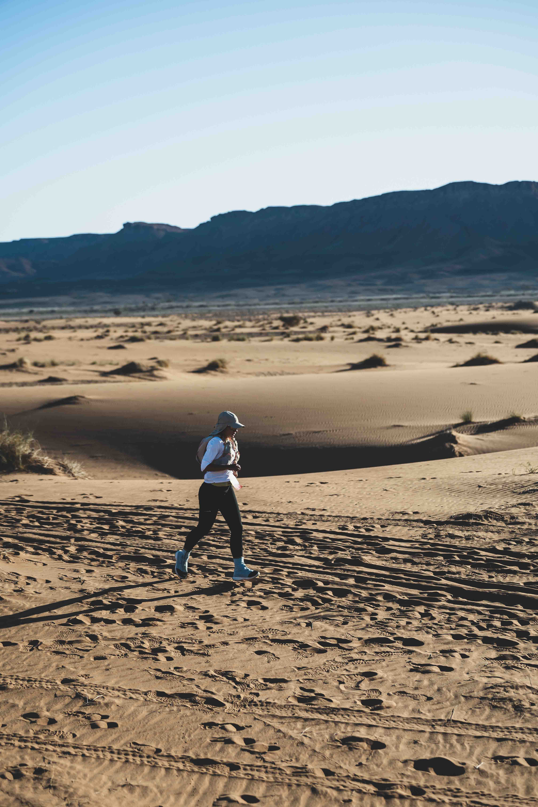
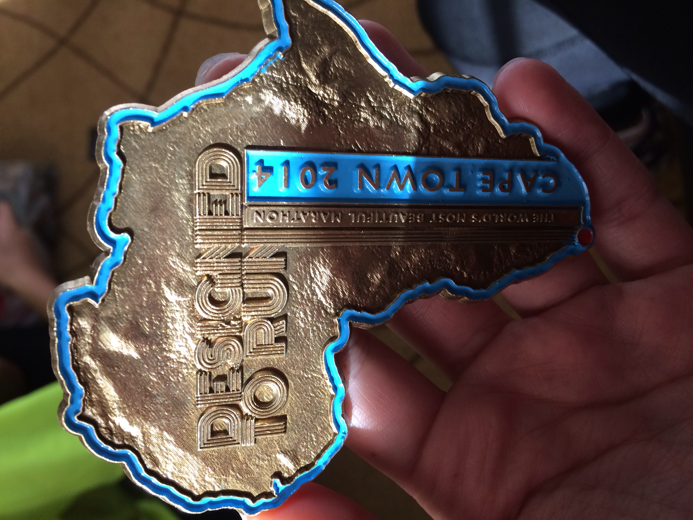
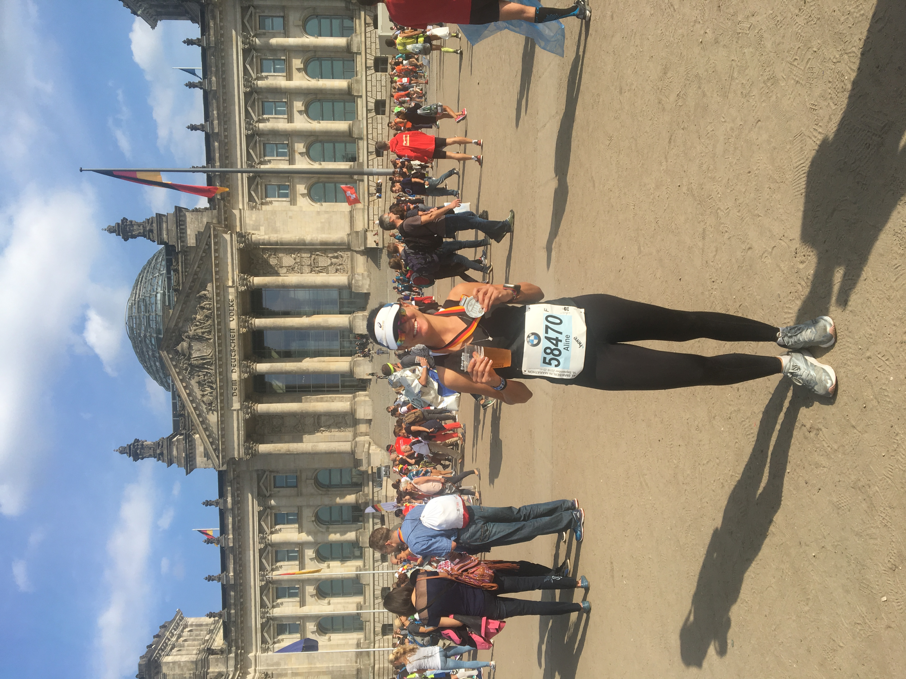
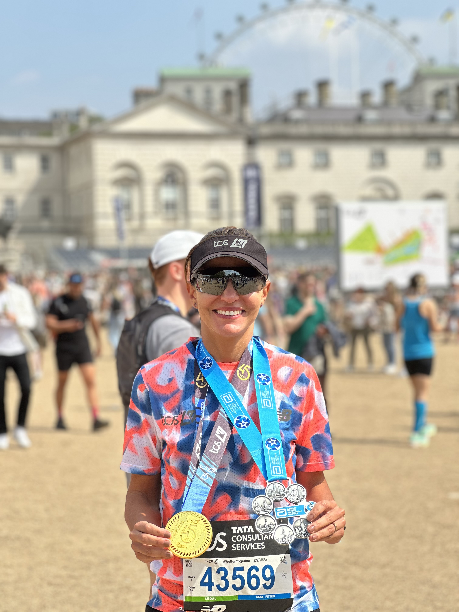
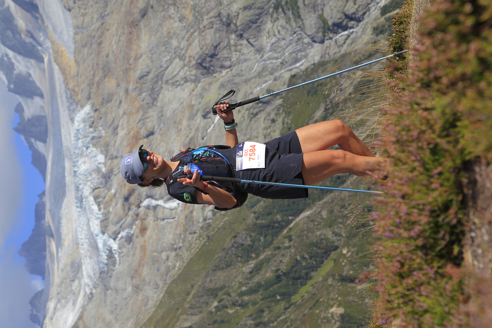

Marathon Des Sables
100 km · Marrocos - África · 01/2026
Corridas, caminhos e histórias além das fronteiras.

100 km · Marrocos - África · 01/2026

56 km · Cape Town - África do Sul · 04/2014
42 km · Tokyo - Japão · 02/2024

42 km · Berlin - Alemanha · 09/2018

42 km · Londres - Inglaterra · 04/2025

55 km · Chamonix - França · 08/2022
42 km · Chicago - EUA · 10/2018